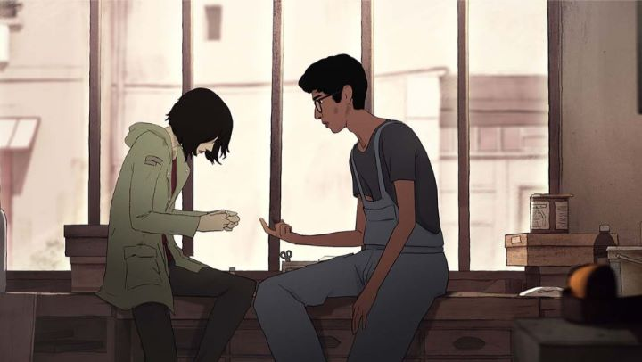

Fairly quickly in 2019, "I Lost My Body" became the indie-darling of the animation scene. Produced by French studio Xilam Animation, best known at the time for high-quality television work, this was a distinctly different, more experimental, adult film. Almost immediately, the movie won awards and accolades. Surely, it would be licensed by GKIDS in North America at any moment... wait... Netlfix?! Yep, the streaming giant acted on the hype and accquired a worldwide license, giving a limited theatrical release for awards purposes, before keeping it exclusively on their streaming platform, with the odds of a decent-quality view of the movie being zero to none (read as: we aren't getting a DVD of this in our lifetime). Despite that early praise, Netflix's other animated license, "Klaus," seems better poised to actually be remembered or celebrated when awards are handed out in early 2020. And the film is so obscure and bizarre, that I don't think more than a few hundred people will actually end of finding the movie, let alone seeing it. Such is the fate it resigned itself to.My sour mood of the death of physical media aside, perhaps it was for the best. Hype ruined "I Lost My Body" for me. It's a fascinating movie, and probably the best indie film of the year (depending on your definition of "indie"), but not nearly worth the praise it has gotten. The movie opens with a vague glimpse of an accident: a young man's hand was dismembered. Moments later, we see the separated hand fight its way out of the hospital fridge, carefully making its way outside while not being seen. Through what magic could this hand move on its own, a la "Thing" from "The Adaams Family?" Where is it trying to go? As it makes its journey across the city, we see flashbacks of the human, named Naofel, and what led up to the incident. We learn his parents died while he was a child, and that he gave up on dreams of being a pianist or an astronaut to be a poor pizza delivery-man, with a guardian who barely acknowledges him, and a roommate who only seems concerned about what girl he'll sleep with tomorrow. Through chance, he has a conversation with a girl named Gabrielle over a speakerphone, and spends the following weeks trying to find her and admit his feelings, leading him down a new path in an otherwise lost life.Ultimately, the dismembered hand is just a gimmick. It's a good gimmick, providing us with harrowing and surprisingly violent scenes of the lost appendage, fighting off pigeons and rats and dogs, making dangerous jumps and climbs. When we see scenes of Naofel, the previous moments make is more acute to what he does with his hands when they're attached. It's so original that it could have easily been a standalone short film on its own, if there was a conclusion to come to. But the main story of Naofel isn't as interesting. It's basically an indie-drama that happens to be animated. It's honest to the experience of modern-day young adults, who feel lost with where life has brought them. But there's no point to it: no real storyline to follow. It's just a series of relatable life moments. Yes, it's unusual to see such a mature storyline in animation rather than live-action, but to call it "mature" gives it too much credit: it's like reading the diary of a meloncholic middle-aged man. The most novel thing that deserves praise might be the representation of different ethnic raises in the lead characters, but even then, I wish that such a feature could be put in a better movie.  I'd forgive the experiment if there was a grand conclusion to the story, but there isn't. It's a thoughtful end, one that relies on the hand being a metaphor for "fate," a loose theme in the story. It's the type of end that might come off better in a book, with an extra hundred pages to flesh out the emotions of the moment. But in "I Lost My Body," it feels like it just ends, with no satisfying punctuation. I was left with a dumb-founded expression on my face: "this is what everyone was talking about?!" It's a story about nothing, like most indie films with directors excited to make something but with nothing to say, or with no clue about how to say it. The production values are experimental too, a nice way to say there wasn't much of a budget. Xilam normally outputs better 2D work than this. In this case, the film appears to be 3D CGI, or at least with CGI used as a model to then trace 2D art over. A sketchy-effect is applied to help us forget how stiff characters are. Frame rates go at less than 12 frames per second, which is noticable throughout. Despite all of that, I admit I appreciated some of the finer details of animation, be it body language of the characters, or the thoughtful movement of the lost hand. The animation of "I Lost My Body" will probably be taught in schools for years, not specifically because it looks good, but because it looks good while being within the possibility of a single art student's output ability. Like the story and direction, the art and animation makes the movie seem more like a graduation project rather than a commercial film.The music also left me with mixed feelings. There is some cool French rap strown in, but both it and the ambient pieces sound like generic tracks from a royalty-free website. Netlfix produced multiple language dubs, and the English dub is serviceable, but there isn't much dialogue in the movie to begin with, and what little there is isn't particularly engaging. I'm certain a certain type of audience will adore "I Lost My Body." Probably the type of audience that loves indie movies for no other reason than that they are "indie," that they are "real" and "honest," that they "do" and "say" things other films don't. But a good movie has to be more than that. So while this movie had a novel concept to lure viewers in, it simply didn't have enough "body" to hold itself up properly.
- "Ani" More reviews can be found at : https://2danicritic.github.io/ Previous review: review_I'll_Just_Live_In_Bando Next review: review_I_Want_To_Eat_Your_Pancreas